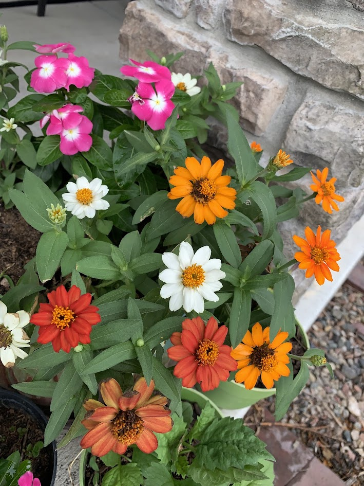

My Hobbies
Crafting
Crafting reduces stress and is a great way to pass the time. It’s a path to express and showcase talent and creativity using various techniques. This hobby gives me relaxation and helps reduce stress, making me happy. I enjoy crafting with my daughter.

Gardening
Gardening is a hobby I truly enjoy because it allows me to connect with nature while nurturing my plants and flowers. It provides me with physical exercise and mental relaxation, and I find great satisfaction in watching life grow from seeds into beautiful blooms.
 back